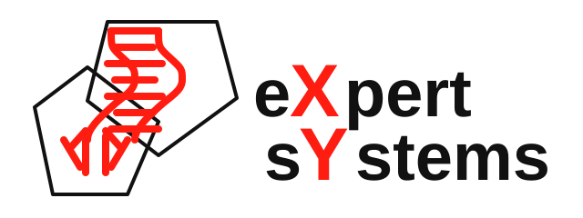

Work Experience
Research, scientific computing, and production engineering across academia and industry.
[2025 - Present] Cheminformatics and Machine Learning Consultant

Expert Systems, San Diego, CA, USA (Remote)- Built adme-db for ADMET data curation, analysis, and duplicate pruning.
- Deployed MPNN models for ADME prediction workflows.
- Developed cheminformatics data pipelines from ChEMBL, BindingDB, and KLIFS.
[2024 - Present] Postdoctoral Research Associate
University of Illinois Urbana-Champaign, Illinois
Supervisor: Dr. Emad Tajkhorshid
- Created preliminary data reports to enhance team efficiency.
- Maintained Linux infrastructure for molecular dynamics and ML projects.
- Conducted molecular dynamics simulations on membrane proteins.
- Customized VMD plugins for better visualization and analysis.
[2020 - 2023] Ph.D. Research Associate
University of Texas at El Paso, Texas
Supervisor: Dr. Lela Vukovic
- Researched DNA-CNT conjugates and peptidomimetics.
- Developed infrastructure for MD simulations and ML projects.
- Collaborated on computational modeling of nanoscale systems.
- Created preliminary data reports for future research proposals.
[2020 - 2023] Ph.D. Teaching Assistant
University of Texas at El Paso, Texas
- Assisted in General Chemistry and Organic Chemistry labs.
[2016 - 2019] Python Programmer and DevOps Engineer
Fanava IDC, Tehran
- Developed Python scripts for business processes.
- Managed Linux servers for optimal performance and security.
- Deployed and maintained Python applications on Linux servers.
- Integrated ML models into production and managed their lifecycle.